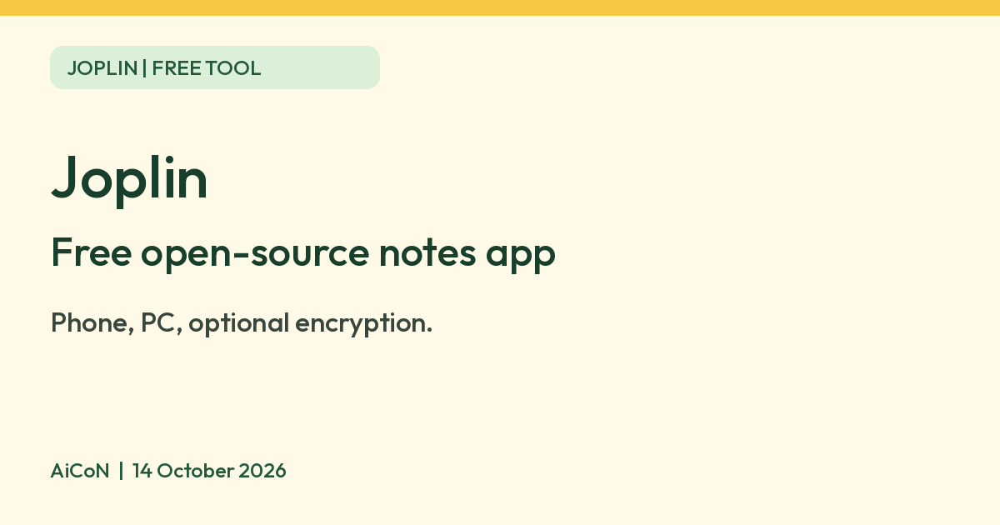

Joplin: a free open-source notes app with optional encryption
Joplin is a free, open-source notes and to-do app for computers and phones. Sync is your choice, and end-to-end encryption is available.

What it is
Joplin is a note-taking and to-do app. You write notes in notebooks, add tags, attach photos, PDFs, audio and video, and search across everything. Its website calls it an open source note-taking app and says notes can be reached "securely from any device". Notes are saved in Markdown, a plain-text format. It is not an AI tool. We included it because it is a free tool from an official source.
Is it free?
Yes, the apps are free. Joplin's help page calls it "a free, open source note taking and to-do application". Its code is under the AGPL-3.0-or-later licence on GitHub. The Joplin Cloud sync service is separate and paid.
- Free: the apps for Windows, macOS, Linux, Android and iOS. The Google Play page shows an Install button with no price, and the App Store page shows "Free". We did not check for in-app purchases.
- Free ways to sync: Joplin says you can sync with services including Dropbox, OneDrive and Nextcloud. Those use your own account with that service, and their own limits and privacy terms apply.
- Paid: Joplin Cloud, the company's own sync and sharing service, has paid plans. The plans page lists prices in euros, so we are not quoting them. It also mentions a free trial. We did not read the trial terms.
What you can do with it
- Notes and to-dos. Organise notes in notebooks, tag them, and set reminders on to-dos.
- Different kinds of content. The website says images, videos, PDFs and audio files are supported, and that you can add maths expressions and diagrams. It says you can take photos with the mobile app and save them in a note.
- Web clipper. A browser extension for Chrome and Firefox saves web pages or screenshots as notes.
- Bring your notes from Evernote. The GitHub page says Evernote exports can be imported, along with plain Markdown files.
- Works offline. Joplin says it is "offline first", so all your data is on your phone or computer.
- Plugins and themes. You can customise the app, and choose between a Rich Text or Markdown editor.
- Search. The GitHub page says full-text search is available on all platforms. The App Store page says it can find text inside PDFs and images with OCR.
Which devices
- Windows, macOS, Linux, Android and iOS, plus a terminal app, says Joplin.
- Joplin Cloud also has a web app, listed on its plans page for the paid plans. We did not test it.
Privacy and data
- Joplin's privacy policy says the apps "do not send any data to any service without your authorisation". Notes and images are saved on your own device.
- Some features contact other services, and the policy lists them. Auto-update, geo-location and OCR language downloads are on by default and can be switched off in settings. Sync, voice typing, crash reports and handwriting recognition are off by default. Geo-location saves your location in note properties when you create a note, so you may want to turn it off.
- If you sync with a third party such as OneDrive, the policy says your notes go to that account and that company's privacy policy applies.
- Joplin says it supports end-to-end encryption in all its apps. You turn it on yourself. The help page says the master password cannot be recovered, so if you forget it you cannot read your encrypted notes.
- Joplin says Joplin Cloud is based in France and uses end-to-end encryption so that "not even we can access your data".
What to know first
- Sync is not automatic out of the box. You pick a sync service in settings, and the help page says encryption must be turned on one device first, then synced to the rest.
- The help page says encryption adds some overhead because data has to be encrypted and decrypted.
- The default editor writes notes in Markdown. The website says a Rich Text editor is also available.
India
- We found no India-specific restriction on the pages we read. We did not verify whether Joplin Cloud payments work from India.
Frequently asked questions
Is Joplin free?
The apps are free and open source. Joplin Cloud sync is a separate paid service. You can sync with Dropbox, OneDrive or Nextcloud instead.
Does it send my notes anywhere?
Joplin says no data is sent without your authorisation. Sync is off by default, but a few features such as auto-update and geo-location are on by default.
Is it AI?
No. It is a notes app. Joplin Cloud's paid plans mention a beta AI chat feature, which we did not look into.
Sources: Joplin, What is Joplin, Privacy policy, Joplin Cloud plans, Encryption, Download, GitHub, Google Play, App Store. Checked 14 October 2026.
No Joplin logo is used. Its repository says the logos and icons are all rights reserved and need the author's permission. Independent guide, not affiliated.